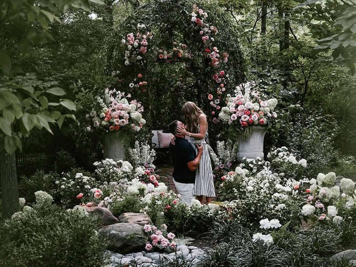

Taylor Alison Swift was born on December 13, 1989 in West Reading, Pennsylvania in the United states of America.
In her early ages or childhood, she really enjoyed music and even performed in a chidren's theater. Her very
first performance in front of a crowd/huge audience was when she was 11 years old. During that time, she sang
"The Star-Spangled Banner" infront of thousands of people before a professional basketball game that happened
in Philadelphia, Pennsylvania. At the age of 12, she started her passion of writing songs and at the age of 13,
she and her family moved near Nashville, Tennessee because Swift was inspired by country music artists. In her
new home, she tried to work very hard to break into the country music scene. Later on, in 2006, she signed with
a record label and then was able to release her very first single called "Tim McGraw" and then from here, she
continued to make more singles and then made her very first album which made her popular in 2007.
Taylor Swift's Career
Taylor Swift's first album, Taylor Swift, successfully solded more than 1 million copies in the year 2007.
In the year 2008, her second album, called Fearless, was released and was able to attract larger audiences
compared to her very first album. This album of hers stayed on top of the Billboard album for the past 10 years,
longer than any album created. This album also won many awards like the popular music award in many countries. After
her popularity from this, she continued to create more albums like Speak Now, Red, 1989, and many more. Aside
from being a singer, she also participated as actress in many movie films like Hannah Montana, Cats
(as a voice actor), Valentine's Day and more. Some awards that Taylor Swift received in her career is a Grammy
Award for the best album of the year after her release of Folklore in 2020, which made her the very first female
to win the category award three times. Another award she received was in 2023, when she was named as a Time Magazine's
Person of the year and the most played artist in Spotify, a music platform. In the succeeding year after her release of
her 11th album, which is called the The Tortured Poets Department: The Anthology, she was able to break records
including most streamed especially in the app, Spotify in a single day reaching more than 300 million listeners.
Taylor Swift Documentary
The video is an hour Documentary (not official) briefly narrating Taylor Swift's evolving story about her childhood up until she became popular.
Taylor Swift's Engagement

Announcement
Taylor Swift has recently announced that she is engaged to her partner Travis Kelce. In her post in Instagram, last August 26, 2025, she wrote the quote: "Your English teacher and your gym teacher are getting married". The post she made was accompanied by photos of Travis proposing to Taylor.
The photos as well showed the two of them embracing and holding their hands, showing Taylor's engagement ring. This post on release had more than 18 million likes in a few hours and fellow celebrities went to congratulate her in Instagram because this was a new accomplishment for Taylor herself.
Backstory
Their relationship started in July 2023, when the NFL football star, Travis Kelce, was spotted attending Taylor's Eras Tour at Arrowhead Stadium, known as well as the Kansas City Chiefs' home turf. During that time, Kelce was seen by many Swifties, watching the show on his private box and at the same time, trading friendship bracelets with fans present inside the venue of the concert.
He was also planning to give one for Taylor and succeeded, however, wasn't able to talk to her personally as said on the
Love Story by Taylor Swift
Chronological Order of Taylor Swift's Albums and Tours
List of all her Albums
Name of Album
Date of Release
Taylor Swift (Debut)
October 24, 2006
Fearless
November 11, 2008
Speak Now
October 25, 2010
Red
October 22, 2012
1989
October 27, 2014
Reputation
November 10, 2017
Lover
August 23, 2019
Folklore
July 24, 2020
Evermore
December 11, 2020
Midnights
October 21, 2022
The Tortured Poets Department
April 19, 2024
The Life of a Showgirl
October 3, 2025
Notable Concepts/Trivias from Her Albums
Taylor Swift, in her career, up until now, was able to create 12 studio albums but has re-recorded and re-released four of them
in her response to a fight for creative rights and control of her songs from her old record label, Big Machine Records.
Albums that were re-recorded and was known as Taylor's Versions:
Fearless – April 9, 2021
Red – November 12, 2021
Speak Now – July 7, 2023
1989 – October 27, 2023
Taylor Swift holds the record for the most annual best-selling albums in the United States 8 times. The best selling albums include:
Fearless in 2009, 1989 in 2014, Reputation in 2017, Lover in 2019, Folklore in 2020, Midnights in 2022, 1989 (Taylor's Version) in 2023, and The Tortured Poets Department in 2024.
The lyrics of the songs in her albums, are very intermediate, taps universal emotions and experiences, and symbolizes her own public image when played.
For more information about her albums, pleae click on Discography.
List of all her World Tours
Name of Tour
Tour Dates
Fearless Tour
April 23, 2009 - July 10, 2010
Speak Now World Tour
February 9, 2011 - March 18, 2012
The Red Tour
March 13, 2013 - June 12, 2014
The 1989 World Tour
May 5, 2015 - December 12, 2015
Reputation Stadium World Tour
May 8, 2018 - November 21, 2018
Lover Fest
-----------------
The Eras Tour
March 17, 2023 - December 8, 2024
Trivias about Her Tours
Fearless Tour: Taylor's first album was a self-titled country pop record with singles like Teardrops on My Guitar, Our Song, and Tim McGraw.
She did this tour during the release of her first album to support it by performing an opening act for large artists at the time.
Speak Now World Tour: Taylor's first proper world tour that began in February 2011 and featured a total of 111 performances. Aside from this being
her first world tour, it was also her first stadium tour and tour that featured more extensive set pieces, choregraphy, and costuming than the Fearless Tour.
The Red Tour: This tour kicked off two years after her last tour in March 2013 with a total of 86 performances across the world. This tour featured the introduction
of surprise songs, which change night-to-night. Certain dates as well of this tour featured Taylor bringing out surpise guests and singing one of their songs as a duet.
The 1989 World Tour: This world tour began in May 2015 and ended December of the same year for a total of 85 shows. This tour featured Surprise Songs mechanic, and
hsted Vance Joy, Shawn Mendes, Rae Morris, and Haim as opening acts.
Reputation Stadium Tour: The Reputation Stadium Tour was Swift's first all-stadium tour, playing May to November of 2018 for a total of 53 shows, also her shortest
tour to date. As from her previous tours, this tour featured surprise songs at each show and a number of surprise guests at certain performances, including Troye Sivan, Selena
Gomez, and Niall Horan.
Lover Fest: Her sixth tour that was supposed to debut on August of 2020 but was cancelled due to COVID-19 pandemic. This tour would have featured her then-first performance
in Brazil, and would also have been her very first tour that included stops at previously organized festivals. However, Taylor did release City of Lover, a recording of a one-off concert
in Paris, as a tv special in May of 2020 since the tour was cancelled.
The Eras Tour: Her tour that kicked off in March 2023 and had recently ended last year, December 2024.This tour of hers featured glimpses of all her previous albums, but focuses more on
those she wasn't able to tour because of the pandemic which are: Lover, Folklore, Evermore, and Midnights.
The Fate of Ophelia by Taylor Swift
Other Infomations About Taylor Swift
To learn more about Taylor Swift, please visit our website about her favorite pet which are Cats!